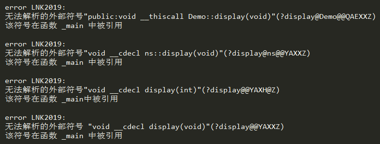
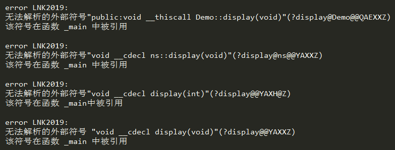

C++函数编译原理和成员函数的实现
从上节的分析中可以看出，对象的内存中只保留了成员变量，除此之外没有任何其他信息，程序运行时不知道 stu 的类型为 Student，也不知道它还有四个成员函数 setname()、setage()、setscore()、show()，C++ 究竟是如何通过对象调用成员函数的呢？
而C++中的函数在编译时会根据它所在的命名空间、它所属的类、以及它的参数列表（也叫参数签名）等信息进行重新命名，形成一个新的函数名。这个新的函数名只有编译器知道，对用户是不可见的。对函数重命名的过程叫做名字编码（Name Mangling），是通过一种特殊的算法来实现的。
Name Mangling 的算法是可逆的，既可以通过现有函数名计算出新函数名，也可以通过新函数名逆向推演出原有函数名。Name Mangling 可以确保新函数名的唯一性，只要函数所在的命名空间、所属的类、包含的参数列表等有一个不同，最后产生的新函数名也不同。
如果你希望看到经 Name Mangling 产生的新函数名，可以只声明而不定义函数，这样调用函数时就会产生链接错误，从报错信息中就可以看到新函数名。请看下面的代码：
该例中声明了四个同名函数，包括两个具有重载关系的全局函数，一个位于命名空间 ns 下的函数，以及一个属于类 Demo 的函数。它们都是只声明而未定义的函数。
在 VS 下编译源代码可以看到类似下面的错误信息：

小括号中就是经 Name Mangling 产生的新函数名，它们都以
上图是 VS2010 产生的错误信息，不同的编译器有不同的 Name Mangling 算法，产生的函数名也不一样。
如果成员函数中使用到了成员变量该怎么办呢？成员变量的作用域不是全局，不经任何处理就无法在函数内部访问。
C++规定，编译成员函数时要额外添加一个参数，把当前对象的指针传递进去，通过指针来访问成员变量。
假设 Demo 类有两个 int 型的成员变量，分别是 a 和 b，并且在成员函数 display() 中使用到了，如下所示：
那么编译后的代码类似于：
使用
这一切都是隐式完成的，对程序员来说完全透明，就好像这个额外的参数不存在一样。
最后需要提醒的是，
C++函数的编译
C++和C语言的编译方式不同。C语言中的函数在编译时名字不变，或者只是简单的加一个下划线_（不同的编译器有不同的实现），例如，func() 编译后为 func() 或 _func()。而C++中的函数在编译时会根据它所在的命名空间、它所属的类、以及它的参数列表（也叫参数签名）等信息进行重新命名，形成一个新的函数名。这个新的函数名只有编译器知道，对用户是不可见的。对函数重命名的过程叫做名字编码（Name Mangling），是通过一种特殊的算法来实现的。
Name Mangling 的算法是可逆的，既可以通过现有函数名计算出新函数名，也可以通过新函数名逆向推演出原有函数名。Name Mangling 可以确保新函数名的唯一性，只要函数所在的命名空间、所属的类、包含的参数列表等有一个不同，最后产生的新函数名也不同。
如果你希望看到经 Name Mangling 产生的新函数名，可以只声明而不定义函数，这样调用函数时就会产生链接错误，从报错信息中就可以看到新函数名。请看下面的代码：
- #include <iostream>
- using namespace std;
- void display();
- void display(int);
- namespace ns{
- void display();
- }
- class Demo{
- public:
- void display();
- };
- int main(){
- display();
- display(1);
- ns::display();
- Demo obj;
- obj.display();
- return 0;
- }
在 VS 下编译源代码可以看到类似下面的错误信息：

小括号中就是经 Name Mangling 产生的新函数名，它们都以
?开始，以区别C语言中的_。上图是 VS2010 产生的错误信息，不同的编译器有不同的 Name Mangling 算法，产生的函数名也不一样。
__thiscall、cdecl 是函数调用惯例，有兴趣的读者可以猛击《函数调用惯例》一文深入了解。除了函数，某些变量也会经 Name Mangling 算法产生新名字，这里不再赘述。
成员函数的调用
从上图可以看出，成员函数最终被编译成与对象无关的全局函数，如果函数体中没有成员变量，那问题就很简单，不用对函数做任何处理，直接调用即可。如果成员函数中使用到了成员变量该怎么办呢？成员变量的作用域不是全局，不经任何处理就无法在函数内部访问。
C++规定，编译成员函数时要额外添加一个参数，把当前对象的指针传递进去，通过指针来访问成员变量。
假设 Demo 类有两个 int 型的成员变量，分别是 a 和 b，并且在成员函数 display() 中使用到了，如下所示：
- void Demo::display(){
- cout<<a<<endl;
- cout<<b<<endl;
- }
- void new_function_name(Demo * const p){
- //通过指针p来访问a、b
- cout<<p->a<<endl;
- cout<<p->b<<endl;
- }
obj.display()调用函数时，也会被编译成类似下面的形式：
new_function_name(&obj);这样通过传递对象指针就完成了成员函数和成员变量的关联。这与我们从表明上看到的刚好相反，通过对象调用成员函数时，不是通过对象找函数，而是通过函数找对象。
这一切都是隐式完成的，对程序员来说完全透明，就好像这个额外的参数不存在一样。
最后需要提醒的是，
Demo * const p中的 const 表示指针不能被修改，p 只能指向当前对象，不能指向其他对象。读者可以猛击《C语言const的用法详解》了解更多关系 const 的信息。关注微信公众号「站长严长生」，在手机上阅读所有教程，随时随地都能学习。本公众号由C语言中文网站长运营，每日更新，坚持原创，敢说真话，凡事有态度。

微信扫描二维码关注公众号